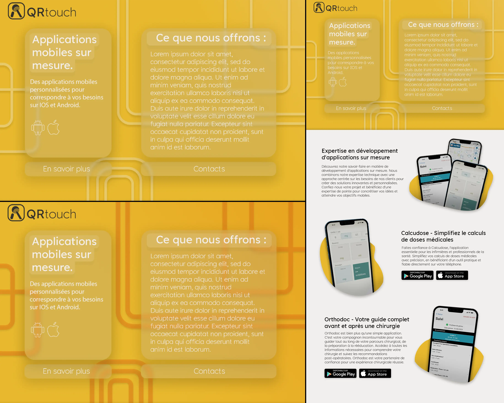

Premier jour
J'ai commencé mon stage par une réunion en visioconférence avec mon maître de stage pour poser les bases et les attentes pour les semaines à venir. Il m'a expliqué que l'objectif principal serait d'apprendre le développement d'applications mobiles avec Flutter, un framework permettant de créer des apps multiplateformes.
J'aurais également pour mission de refaire le site web de son entreprise entièrement, celui-ci ayant été créé à partir d'un template WordPress. L'idée est de partir d'une page blanche pour concevoir un design moderne et responsive. Cela me permettra de sortir de ma zone de confort, moi qui ai l'habitude de créer des sites au style épuré et sobre.
Pour ce nouveau site, je devrais m'inspirer des tendances actuelles en matière de web design, avec des courbes, des couleurs vives et des dégradés. Un beau défi!
J'ai donc commencé par faire quelques essais de design sur Photoshop pour explorer des pistes, sans rentrer encore dans le développement.
Jours 2 à 4
Durant ces trois jours, j'ai continué à travailler sur Photoshop pour préciser le design du site web, en respectant la charte graphique de l'entreprise. J'ai notamment imaginé des effets de transparence qui apportent une touche de modernité.
J'ai également créé des modèles 3D que j'ai rendus avec différents effets pour générer des visuels à intégrer au site. Ces illustrations 3D permettent d'apporter du dynamisme.
J'ai soumis mes premières propositions à mon maître de stage qui m'a demandé d'apporter quelques modifications : changer le fond trop orange, améliorer la lisibilité des textes. J'ai donc appliqué ces changements, et également imaginé le reste du site web pour avoir une vision globale.
Du 5ème au 29ème jour
Après ce début de semaine concentré sur le design, j'ai continué à améliorer le visuel et la disposition des différents éléments tout au long des 3 semaines suivantes. J'ai également créé de nouveaux rendus 3D pour agrémenter le site.
Dès que j'ai eu un prototype de design complet, j'ai commencé à le transposer en code HTML/CSS en utilisant le framework Bootstrap Studio. Ce logiciel me fait gagner du temps pour la partie intégration, le site étant avant tout vitrine.
J'ai soumis régulièrement mon travail à mon maître de stage qui m'a donné des retours pour peaufiner le design et corriger certains détails. J'ai également dû procéder à l'installation et à la prise en main d'Android Studio pour suivre une formation sur le développement d'applications mobiles avec Flutter qu'il m'a proposée.
Les derniers jours ont été consacrés à finaliser le site web, corriger les derniers bugs et imperfections. Je suis satisfait du résultat obtenu qui correspondait aux attentes initiales. Ce stage m'a permis de diversifier mes compétences en découvrant de nouveaux outils et technologies.
Outils utilisés
- Photoshop
- Bootstrap Studio
- Android Studio
Compétences développées
- Design UI/UX
- Web design
- Intégration web
- Bootstrap
- Flutter (notions)